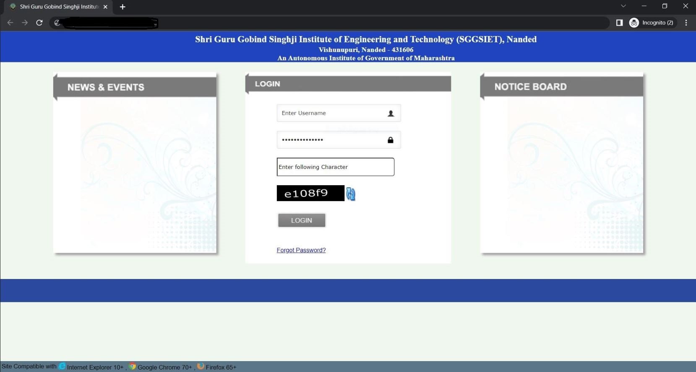

I'm Ajay Deshmukh
Creator + Student
Glad to see you!
As a developer, I specialize in creating modular and scalable front-end architectures. Look through some of my work and experience! If you like what you see and have a project you need coded, don’t hestiate to contact me.
Featured Projects
View selected projects below. More information can be found at website.

University Mahiti
Developed the back‐end connectivity in the application, which connects to an existing SQLite database.
Updated interfaces, corrected coding issues, and enhanced the Python app’s overall efficiency
Academic ProjectExperience
See my complete work history on LinkedIn.
SISTMR Australia
Research InternJanuary 2022 – May 2022
Key contributions:
- Worked on brute force, sniffer tools, code analysis and exploitation development tasks.
- Tested vulnerabilities in the network and website applications with 84% accuracy using open source tools.
- Examined the 4+ complex software applications operating on the virtual machine.
Microsoft Future Ready
Winter InternSeptember 2021 – December 2021
Top 1000+ performer in Microsoft Azure project development
Key contributions:
- Utilized the 18+ laboratory cloud computing practise from the Microsoft Learn documentation.
- Deployed the prototype on Microsoft Azure with cloud storage using the web app on a container.
Education
Shri Guru Gobind Singhji Institute of Engineering and Technology - Nanded, IN
Bachelors of Technology, Information Technology, 2018-2022
Coursework: Algorithms, Databases, Computer Networking, Machine Learning, Cryptography
Golden Kids Junior College - Amravati, IN
Higher Secondary Certification, 2016-2017
Certification
Google IT Support Professional Certification - Google
Coursera: Link, 2020
Python for Everybody - University of Michigan
Coursera: Link, 2020